small_norm <- rnorm(n = 20)
med_norm <- rnorm(50, mean = 5)
large_norm <- rnorm(1000, mean = 100, sd = 20) Plotting with R
Biol B215
Introduction
One of the most important parts of data analysis is to visualize your data with plots and charts. To paraphrase Yogi Berra: You can see a lot by looking. R has lots of powerful tools for creating plots, and you can customize and polish your plots to easily generate graphics worthy of the best scientific paper. There are a number of libraries for making specialized plots and sets of plots, some of which we will explore later in the semester. But for now we will just work on plotting with the built-in graphics. You will see how to make histograms, bar charts, box plots, and scatter plots, and how to customize those plots.
You make plots the same way you do anything else in R: you type a command or a series of commands into the console, telling R what data to use and how you want the plot to look. At first, this seems much more cumbersome than selecting your data in something like Excel and clicking a plot button, but it has several advantages. They tend to be more customizable, while having much better defaults than Excel. These plots are made for science, not for splashy corporate graphics (not that there is anything wrong with that). The biggest advantage is that once you have a plot that you are satisfied with, creating a similar plot with different data becomes just a matter of copying and pasting the command, replacing only the parts that refer to the data itself.
Data
The first thing to do is to generate a bit of data for us to plot. We will do this by using the random number generators built into R, and some data sets that come with R.
First, let’s create some random data. The most common distribution in statistics is the normal distribution, so we’ll start by having R generate random data from that distribution, using the function rnorm(). By default, it uses a mean value of 0 and standard deviation 1, generating as many samples as you ask for in the first argument, n. We’ll generate three sets of data: one with 20 samples with the default mean and variance, 50 samples with a mean of 5 (and the default standard deviation of 1), and 1000 samples with with a mean of 100 and a standard deviation of 20.
The other data set we will use is a set of measurements of irises (the flower). This data set dates back to the early 20th century, and a paper by R.A. Fisher, who originally developed much of the basic statistics that we use now. But he was fundamentally a biologist, and was also responsible for founding the fields of population genetics and quantitative genetics. Much of his work in statistics was developed to deal with biological data. In any case, the data in the iris data set were originally collected by Edgar Anderson, but made famous by one of Fisher’s publications. They are measurements of flower sepals and petals, with 50 measurements of each of 3 species. (If you want a bit more information, try ?iris.) The commands below will load the iris data set into your workspace as a data frame and then show a quick summary of structure of that data frame (names of the columns, type of data in each, and a few values).
data(iris)
str(iris) 'data.frame': 150 obs. of 5 variables:
$ Sepal.Length: num 5.1 4.9 4.7 4.6 5 5.4 4.6 5 4.4 4.9 ...
$ Sepal.Width : num 3.5 3 3.2 3.1 3.6 3.9 3.4 3.4 2.9 3.1 ...
$ Petal.Length: num 1.4 1.4 1.3 1.5 1.4 1.7 1.4 1.5 1.4 1.5 ...
$ Petal.Width : num 0.2 0.2 0.2 0.2 0.2 0.4 0.3 0.2 0.2 0.1 ...
$ Species : Factor w/ 3 levels "setosa","versicolor",..: 1 1 1 1 1 1 1 1 1 1 ...Take some time to look at the raw data (type the name of each variable and look at the output). You will see that Sepal.Length, Sepal.Width, Petal.Length, and Petal.Width are all numeric, data, while Species is a factor.
ggplot2
For these exercises, we will mostly focus on the built-in graphics in R, but there are a number of packages which present alternative ways of creating plots, and one of the most common is ggplot2, written by Hadley Wickham. If you have not already installed it, you can do so with install.packages("ggplot2"). For many of the plot types here I will show you how to construct them with either built-in graphics or ggplot2. Sometimes one is easier, and sometimes the other… but in my opinion, the ggplot2 version almost always looks better.
Simple plots
The most basic plotting command in R is plot(). Lets see what happens when we try it with our random data. Remember that since we are using randomly generated data, your plots will not look exactly like mine.
plot(small_norm)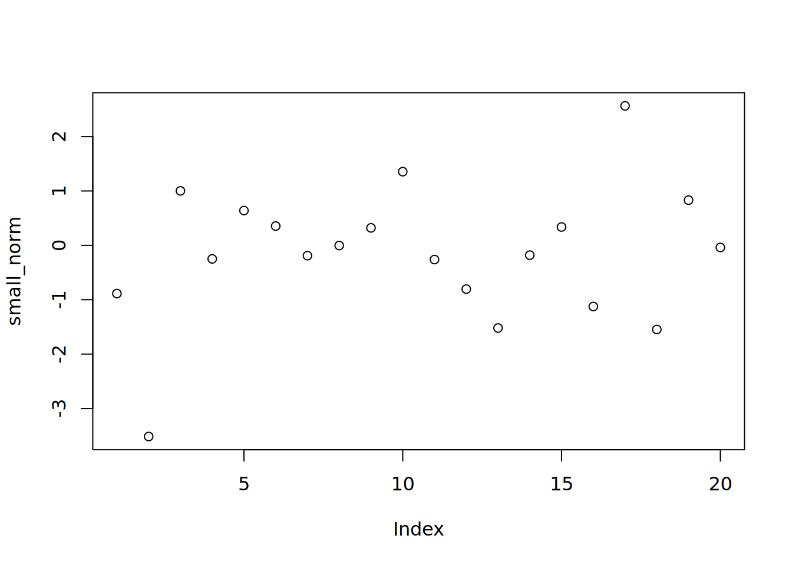
So what did that do? Something you almost never want to bother doing: R plotted the data values in small_norm on the y-axis, with just the position of each value in the vector along the x-axis. Since the order doesn’t mean anything, this is probably not the kind of plot we really wanted to produce. But for now, let’s stick with it, just to illustrate some of the things you can do to customize plots.
Labels
If we were just exploring the data in R, we might be satisfied with the default label, which R takes from the name of the variable. But for any kind of publication (including homework!) you should change the axis labels to inform your readers about what the data represent. We do this with the xlab or ylab arguments, placing our label in quotes. We can also title the plot using main. (Some plots will have a default title. To get rid of it, you can use main = "" ).
plot(small_norm,
ylab = "My random variable",
main = "A Bad Plot")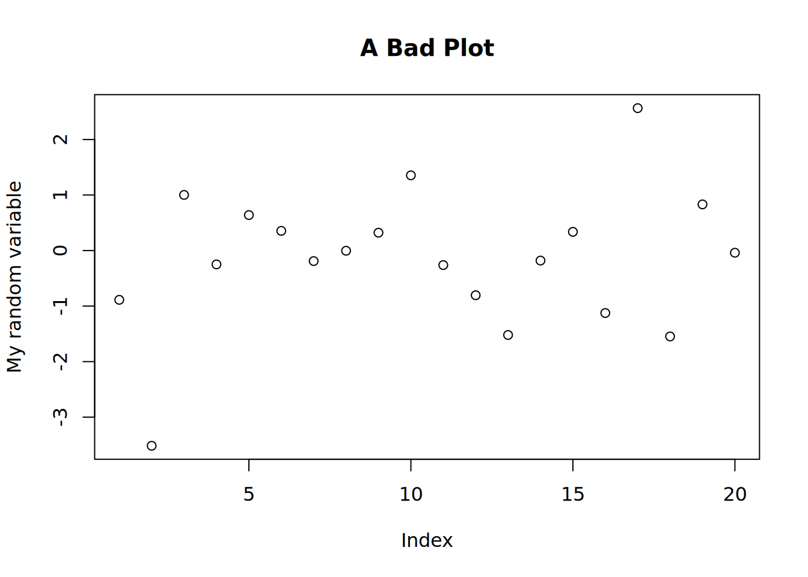
We can also change what is being plotted (points, lines, etc.)using type, change the color of the points using col, and their shape with pch (which stands for “point character”) and many other options. For a more extensive list, I recommend looking at the reference card available at: http://cran.r-project.org/doc/contrib/Short-refcard.pdf, and in particular the “Graphical parameters”” section. I’ll use a few different options through this worksheet; see if you can figure out what is doing what by trying different settings yourself.
plot(small_norm,
ylab = "My random variable",
type = "l")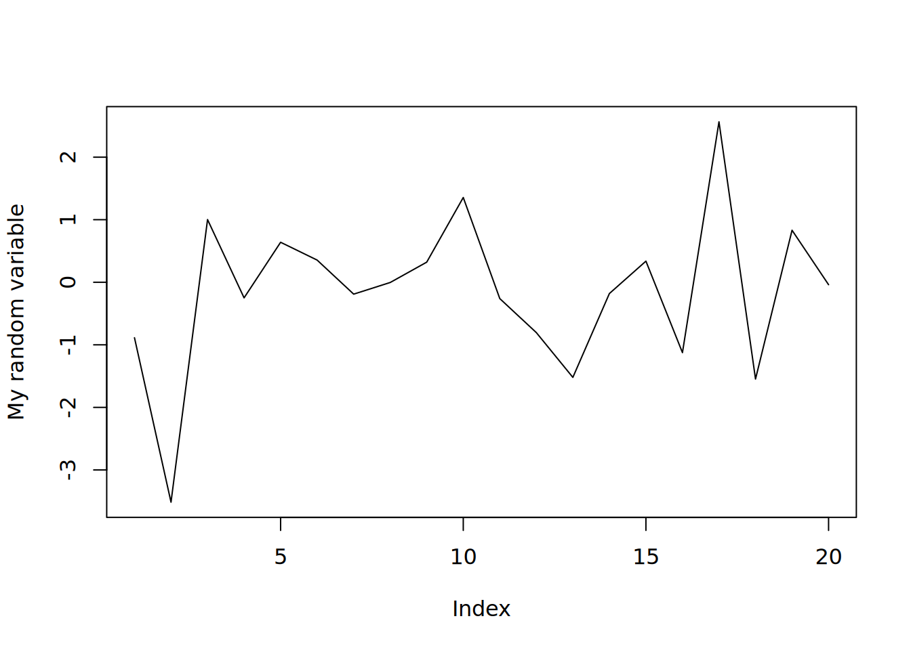
R has a number of ways to define the color you want, but often the easiest is to just use one of the predefined colors, like "blue", "red", "green", or "lemonchiffon3". Yeah, the color names get strange. For a complete list of the colors, you can use the colors() command, or you could look at the following color chart: http://research.stowers.org/mcm/efg/R/Color/Chart/ to see what they all look like. Note that color names have to be given as strings with quotes around them (unless you store the color names in your own variable).
plot(med_norm,
ylab = "Another random variable",
col = "firebrick", pch = 18)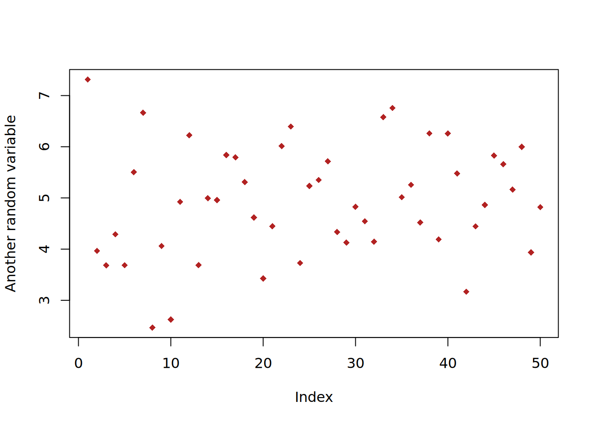
To see the possible point types (there are 20 of them), you can make a quick plot using a command like the one below.
plot(1:20,
ylab = "pch value",
pch = 1:20,
col = c("red", "blue"),
cex = 2) 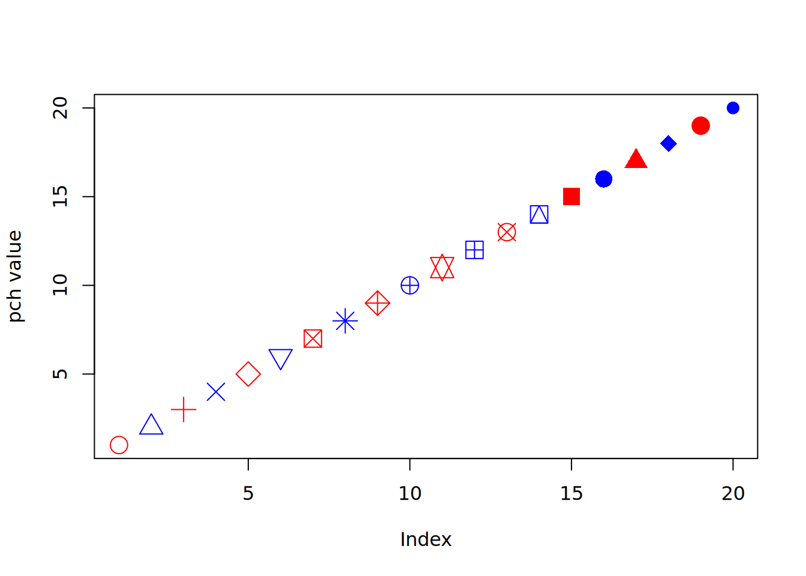
Notice how I can give the pch and col arguments that are vectors, so each point gets a different shape and the colors alternate (because R is recycling the vector). You can do the same thing for any other option that affects the appearance of data points, which can be useful for visually separating different subsets of data, or highlighting individual points.
Histograms
Since the previous plots were not particularly useful, lets try to do a bit better. We’ll start with a basic histogram, which you already saw in your homework assignment.
hist(med_norm)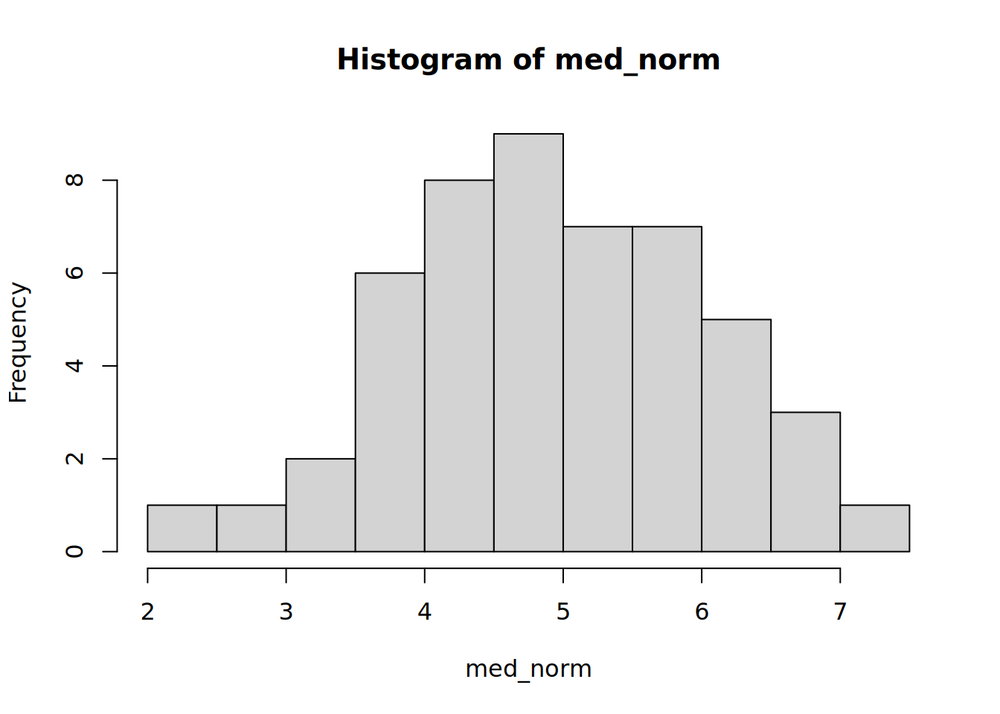
We can adjust the number of divisions in the histogram with breaks. When making a histogram, this is probably your most important decision. If you have too many or too few breakpoints, your histogram will not be very informative. There are no hard and fast rules; it depends what you are trying to show with the plot, as well as how much data you have. (Note that R will not necessarily give the exact number of breakpoints that you ask for, it does some optimization internally. If you want, you can use breaks to specify the exact breakpoints with a vector instead of a single number. This can be useful for precise plots, and also for histograms with unequal bin widths.)
hist(small_norm,
breaks = 20,
col = "blue",
main = "Too many breakpoints")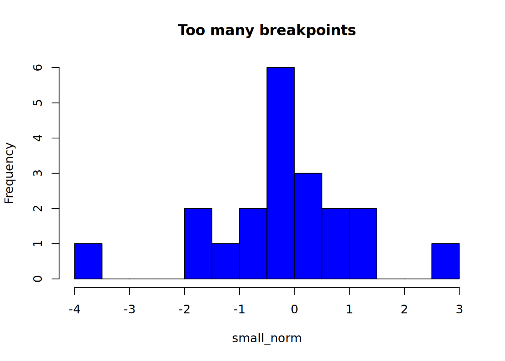
hist(large_norm,
breaks = 20,
col = "blue",
main = "Better with more data")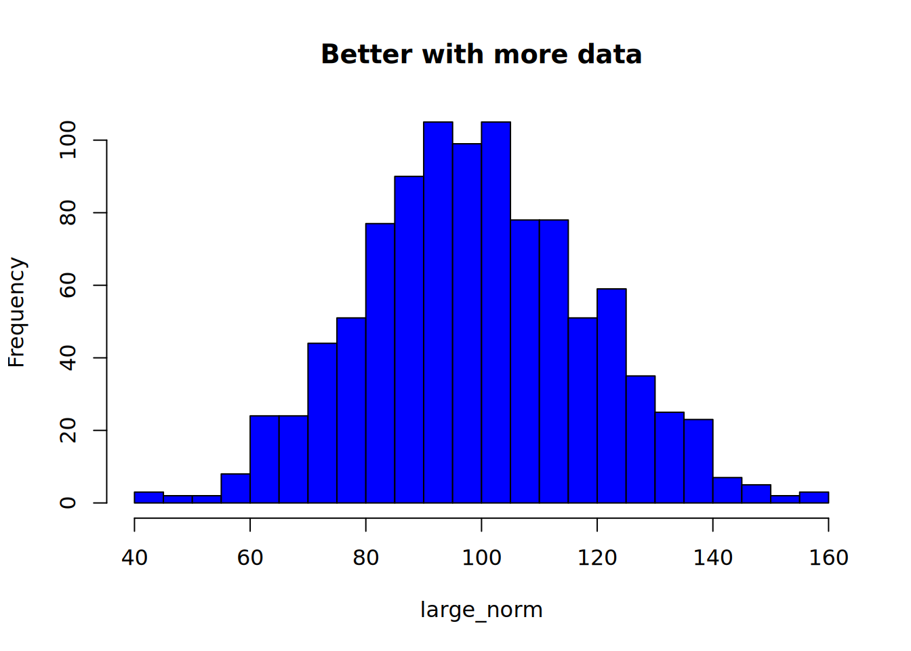
ggplot2 Histograms
The basic plotting function in in ggplot2 is qplot(), which can actually make a large number of different kinds of plots, depending on what options you give it. (Saying this is the basic plotting function is a bit misleading as it is actually a layer on top of lower level functions, but it is the easiest one to use, at least at first.)
To make a histogram, we will first load the ggplot2 package (you only need to do this once per session) and then call qplot() with a single vector of numbers. Unlike plot(), qplot() will actually do something reasonable here, and make a histogram rather than just a series of points.
library(ggplot2)
qplot(med_norm)Warning: `qplot()` was deprecated in ggplot2 3.4.0.`stat_bin()` using `bins = 30`. Pick better value `binwidth`.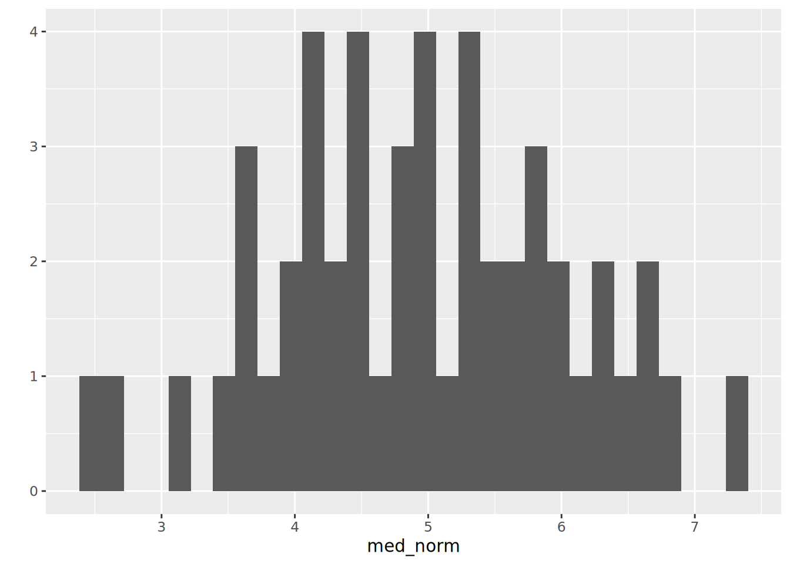
We got a warning because we did not tell qplot about the histogram bins we wanted. Rather than specifying breaks as we did with hist(), we can tell qplot() the actual size of the bins we want to use by giving it a binwidth argument (or use bins to specify the number of bins as before). Other arguments for axis labels and title are the same is in hist().)
qplot(med_norm,
binwidth = 0.5,
main = "YA Histogram",
xlab = "x",
fill = I("blue"))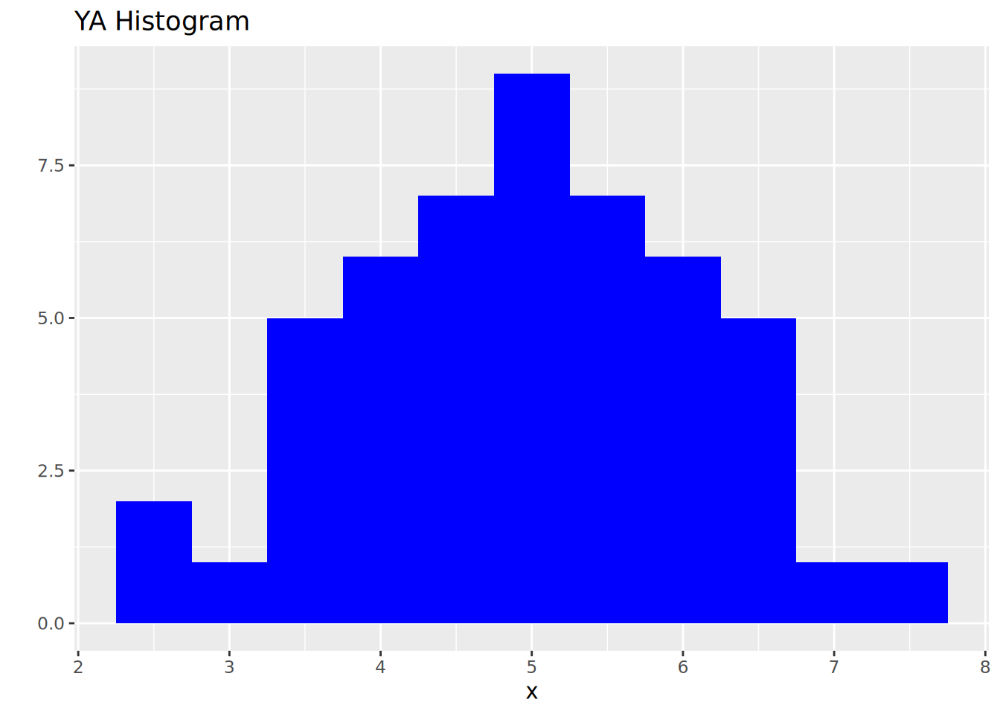
Facetting with ggplot2
One of the very nice features of ggplot2 is the ability to work with data frames that contain multiple related data sets, or to split data sets by a particular variable and plot each subset separately, in different colors, or otherwise distinguish the subsets. We can play around with this using the iris data set. To start, lets make a histogram of just the sepal widths of the flowers in the data set (notice how we use the data argument to specify that our x variable comes from a particular data frame):
qplot(x = Sepal.Width,
data = iris,
binwidth = 0.2,
xlab = "Sepal Width (cm)")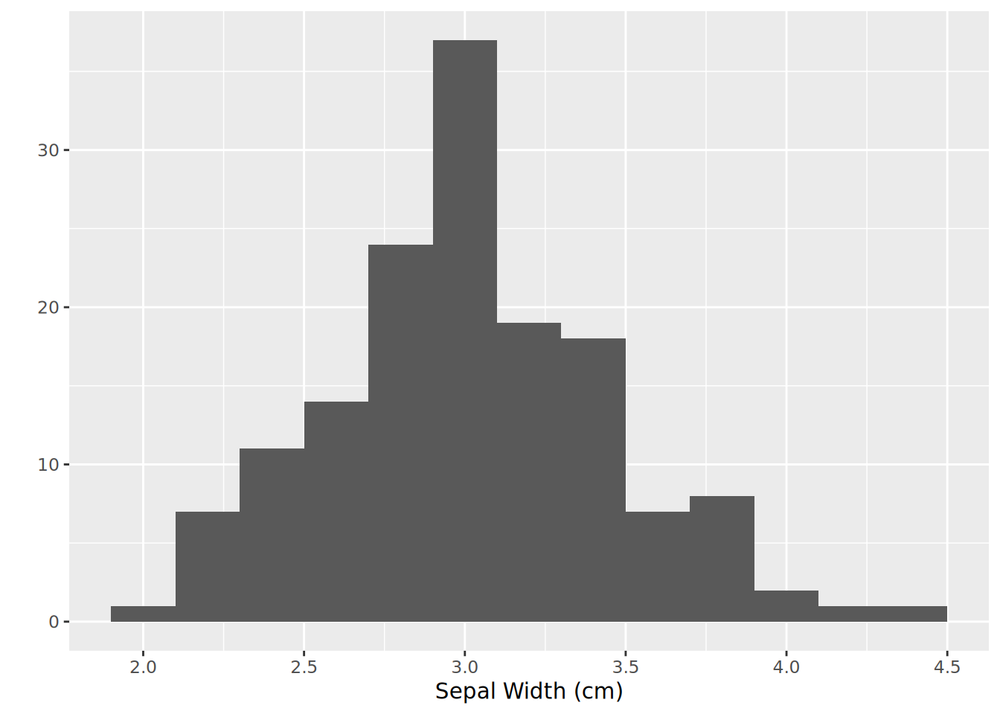
If we specify the fill color as a variable (Species in this case), ggplot will make a kind of stacked histograms, with each bar colored by the number of each species in each grouping.
qplot(x = Sepal.Width,
data = iris,
binwidth = 0.2,
fill = Species,
xlab = "Sepal Width (cm)")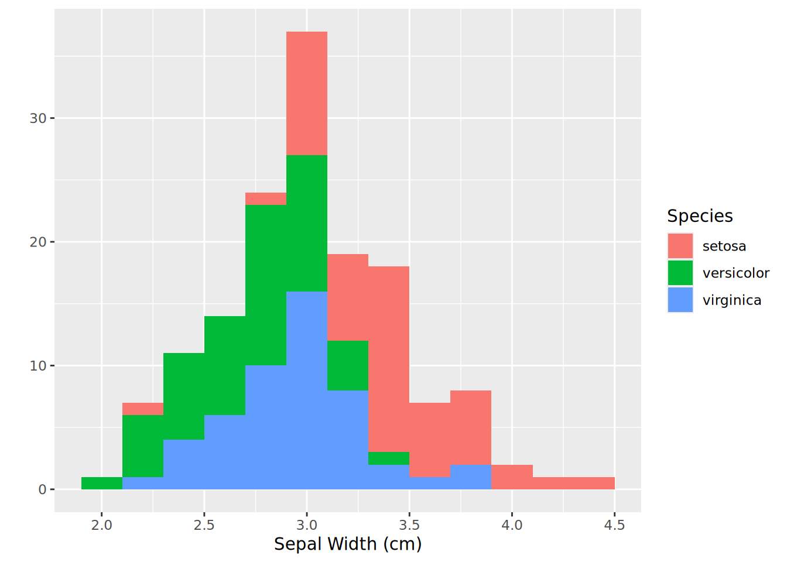
While pretty it can be a bit hard to see what each species histogram would look like on its own. In this case, the setosa histogram is easy to interpret, but the ones stacked on top of it are a bit rough. It might be better to separate each set of data onto distinct sets of axes. When we do this, we do want all of our plots to still have the same binwidths and to be nicely aligned. This is called faceting, and can be done with the facets argument. To use this, you specify what you want to split the data up by, with vertical splits (rows) first, then a ~ (tilde) followed by horizontal splits (columns). In this case I want to the plots vertically so the data are stacked one on top of the other by Species, but I don’t want to split by anything on the other axis, so I just use a period (.) to specify no splitting on the other axis. So facetting variable is Species ~ . as shown below.
qplot(x = Sepal.Width,
data = iris,
binwidth = 0.2,
facets = Species ~ .,
xlab = "Sepal Width (cm)")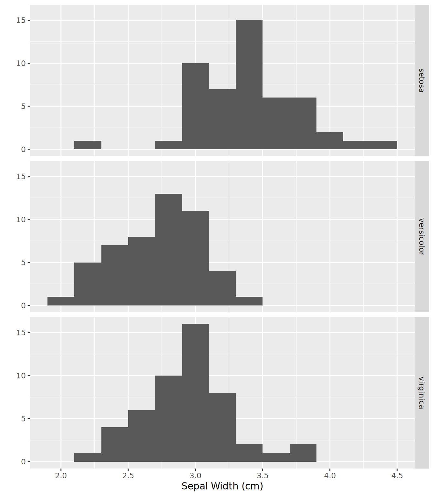
At this point, as your plots start to get complicated, we are starting to get out of the range of things that qplot() does very well, and it is better to start to switch to the full power of ggplot2, which has a bit of a different syntax. ggplot2 follows a “Grammar of Graphics” to arrange and plot data. Briefly, this means that we separate out things like the data being plotted from statistics that we calclated on it (such as means and medians) and the geometries (shapes) that we use to plot those results. The first step is to specify the data, and what we will call aesthetics: what is going to go on each axis, or determine colors of points. This is done with the ggplot() function, which takes exactly those two arguments: data and mapping of data to axis or other aesthetic properties (color, size, etc.), which are defined by the aes() function. We then litterally add on (with a plus sign!) the kind of plot we want (the geometry) with one of the geom_() functions and its options, and finally add on other misc additions like facets and labels. To create the same plot as above, the full call would would look as follows (I have added coloring the bars by species to show you how that might work):
ggplot(data = iris, mapping = aes(x = Sepal.Width, fill = Species)) +
geom_histogram(binwidth = 0.2) +
facet_grid(Species ~ .) +
xlab("Sepal Width (cm)") +
theme(legend.position = "none") # no separate legend box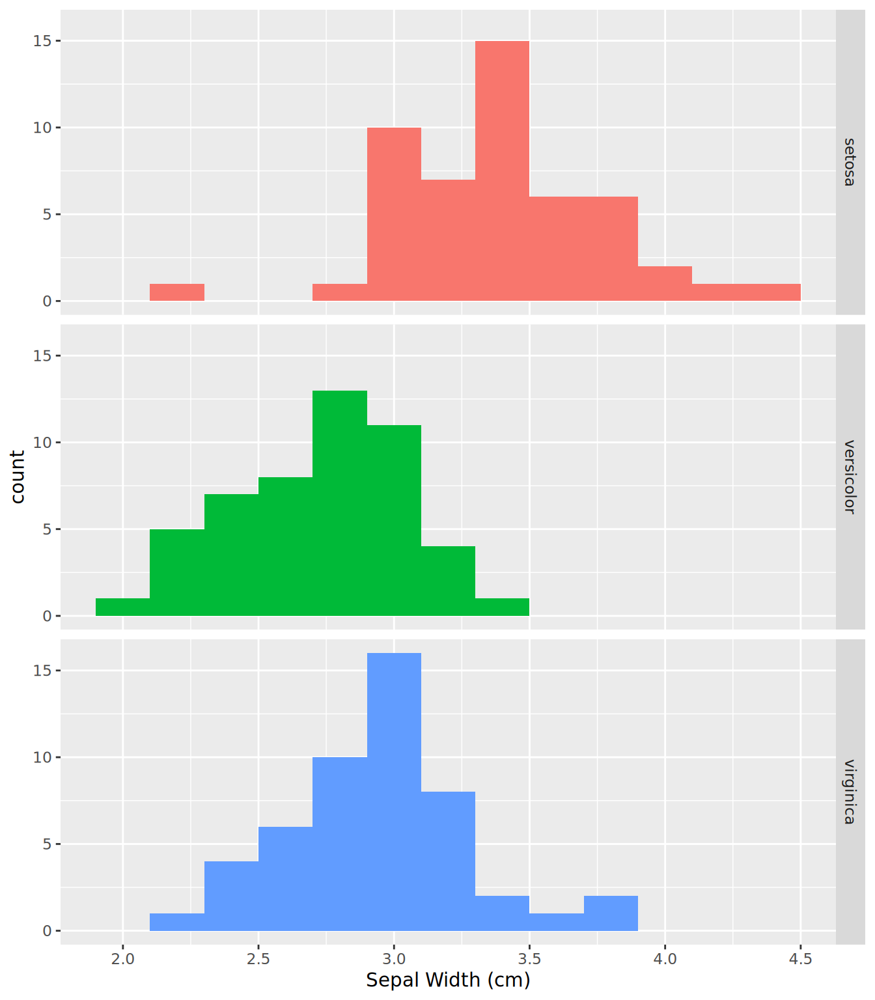
While this looks like more typing at first, it can actually be much more explicit about what you are trying to plot, and should become easier to use with time. You will almost certainly want to keep as a reference the Data Visualization with ggplot2 cheatsheet (pdf) available at RStudio.com. For most of the further examples in this course, I will be using ggplot() in preference to qplot()
Adding to plots
Often you might want to add extra points or lines to a plot, and R does allow you do to this in a few different ways. With the base graphics (we’ll explore another system later), you can add points, lines, line segments, and rectangles to a plot you have made with commands points(), abline(), segments(), and rect(), respectively. For now, we will just use abline() to annotate our histogram a bit. Feel free to explore the other commands as well.
To add lines showing the locations of the mean and standard deviations, we can first calculated those, then add them to the plot with abline(). The a and b in abline() refer to the equation \(y = a + bx\), so you can use it to plot a line at any location with a y-intercept of a and a slope of b. So if you want a diagonal line that goes through the origin with a slope of 1, you would use the command abline(a = 0,b = 1) or simply abline(0, 1). One thing you can’t do with that equation is to plot a vertical line, but that can be done by leaving out a and b and instead giving an x-intercept value or values as the argument v, which is what I have done below.
large_mean <- mean(large_norm)
large_sd <- sd(large_norm)
hist(large_norm,
breaks = 10)
abline(v = large_mean,
col = "purple",
lwd = 2) #lwd controls the line width
abline(v = c(large_mean + large_sd, large_mean - large_sd),
col = "purple",
lwd = 2,
lty = 2) #lty controls the line type, here dashed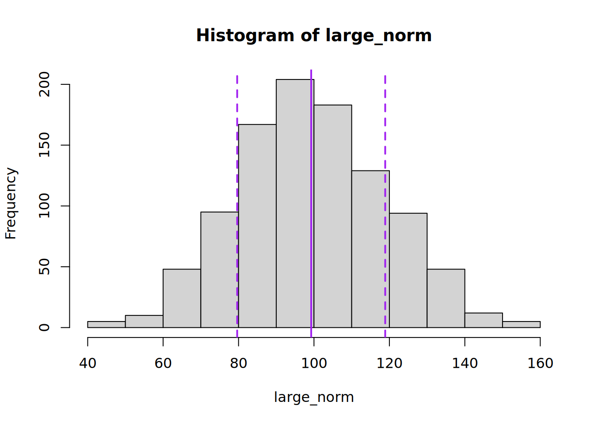
For ggplot2, you add elements like additional geometries to a plot by literally adding things to the intial functions using a + sign. To add a vertical line, you add the geom_vline() function and specify the xintercept argument. As you will see, ggplot2 tends to be a bit more verbose than the basic graphics. You have to type out things like color and linetype, but this can make it a bit easier to see what is really going on.
ggplot(mapping = aes(x = large_norm)) +
geom_histogram(binwidth = 10) +
xlab("x") +
geom_vline(xintercept = large_mean,
color = "purple") +
geom_vline(xintercept = c(large_mean + large_sd, large_mean - large_sd),
color = "purple",
linetype = 2 )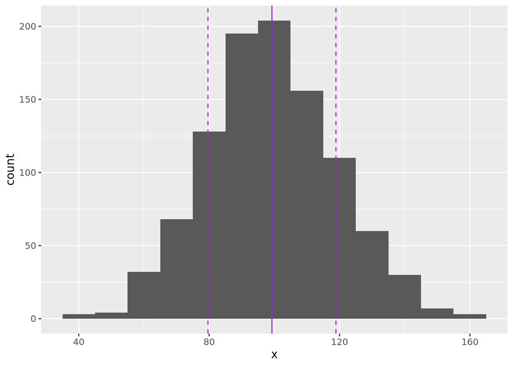
Create a histogram of the large_norm data with about 100 breakpoints. Is this a good number? Play around with different numbers of breakpoints until you find one that you think is a good representation of the data. Then add vertical lines indicating the median and interquartile range of the data. You will want to use the quantile() function to find those quantities.
Box Plots
Another way we can represent a distribution is with a box plot, which we can make using the function boxplot(), of all things. For one variable, the call is simple:
boxplot(iris$Petal.Length, ylab = "Petal Length (cm)")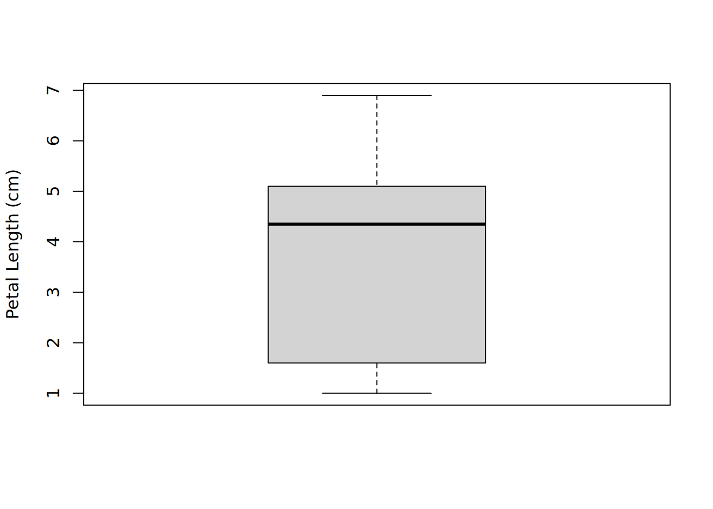
The real utility of box plots though, is to compare distributions in a single plot. To include more than one variable, we need to enclose the variables in a list, which is a data structure we have not yet talked about. It is similar to a vector, but can contain elements of different types, including vectors. We could save the list to a variable name of its own, but for now we will just call list() within the boxplot() function. If To customise the labels for each box, you use names, as in the barplot() example.
boxplot(list(iris$Petal.Length, iris$Petal.Width, iris$Sepal.Length, iris$Sepal.Width),
names = c("Petal Length", "Petal Width",
"Sepal Length", "Sepal Width"),
ylab = "centimeters")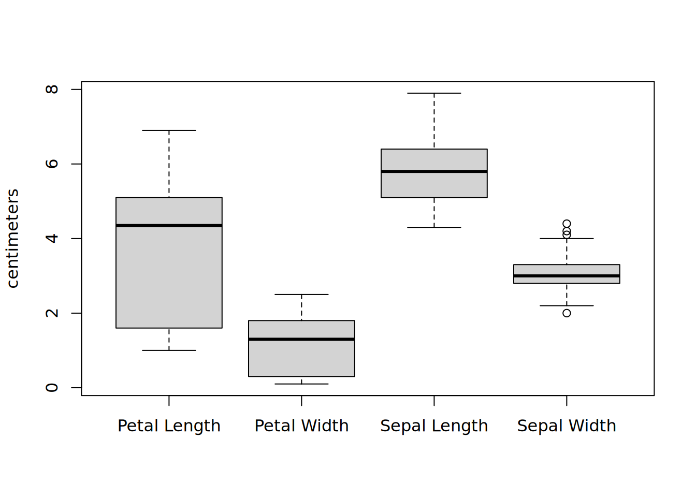
Another thing we might want to do is to take the iris data and separate out the different species. To do that with base graphics, we have to introduce R formulas. A formula is a way of representing a relationship you want to explore. Take the classic linear relationship: \(y = a + bx\). Since in statistical analysis we generally don’t know \(a\) and \(b\) before we start, the R formula expression just leaves them out, and we would represent the relationship between a response variable y and an explanatory variable x with the formula y ~ x. What that is saying is that y may depend on x, and that is the relationship I want to explore. In the context of the box plot, I want to see if the distributions are different for different species, so I will use the formula Petal.Length ~ Species. This is put in as the first argument. In order to save me from having to type iris$ a bunch of times to show that I am referring to the iris data frame (i.e. iris$Petal.Length ~ iris$Species), I can tell the boxplot command that all of my varibles are coming from iris with the argument data = iris as shown below.
boxplot(Petal.Length ~ Species,
data = iris,
col = c("orange", "purple", "blue"),
ylab = "Petal Length (cm)")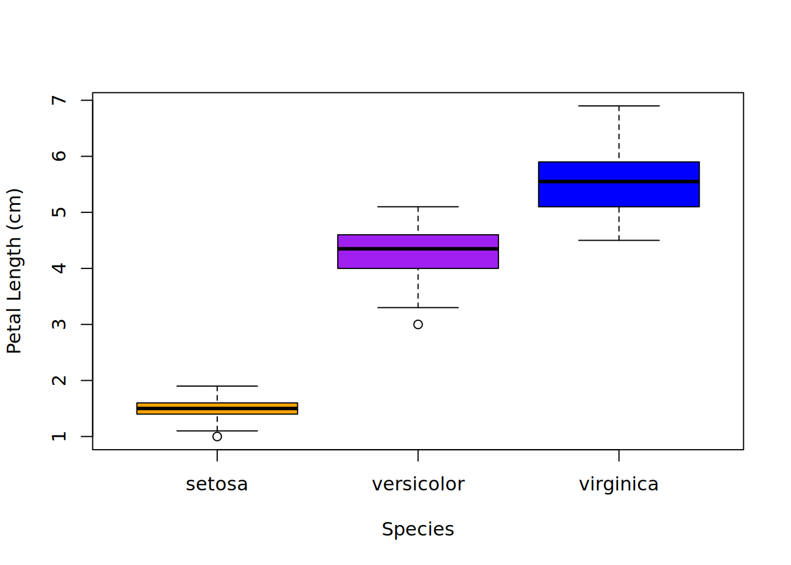
You should be able to see pretty clearly why plotting all of the species together as we did earlier was a bad idea…
ggplot2 boxplots
ggplot2 doesn’t use the formula notation for boxplots. Instead you just specify the x and y axis as you might have otherwise expected, then use geom_boxplot():
ggplot(iris, aes(x = Species, y = Petal.Length, fill = Species)) +
geom_boxplot() +
ylab("Petal Length (cm)")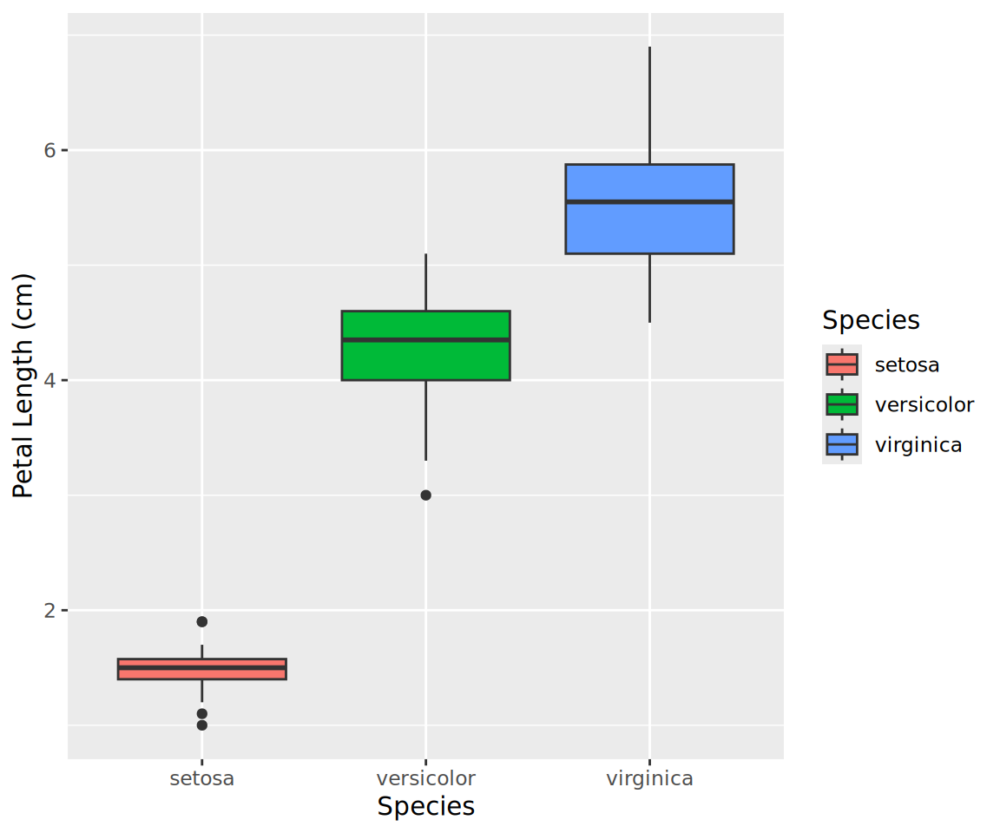
Make a boxplot that shows the distribution of the product of petal width and petal length for each individual iris in the data set, split by species. Add a solid horizontal line to your plot that shows the mean of this product across all three the species. Also add a dotted horizontal line that shows the product of mean width and mean length, calculated separately. Are these the same? Why or why not?
Scatterplots
Finally, lets make some scatterplots. In many ways, these are the easiest to do. Use plot(), giving both x and y values. (Unfortunately, the data = iris trick won’t work here.)
plot(x = iris$Sepal.Width, y = iris$Sepal.Length)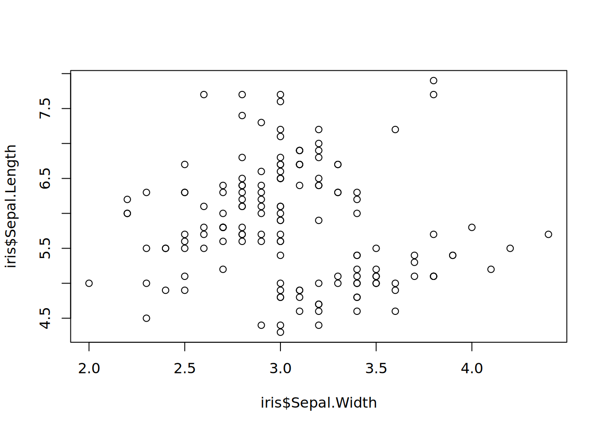
If you want to add color or shapes to indicate the different species, things get a bit annoying, as we have to assign a color to every single point. Since the data are ordered by species, we can do this quickly with rep(), but if they were not, things would get a bit more complicated. If we wanted to do different shapes by species, we would have to make a vector of the shapes as well, which starts to get tedious. We also have to make a legend manually, which I am not even going to try here.
species_colors <- rep(c("orange", "purple", "blue"), each = 50)
plot(x = iris$Sepal.Width, y = iris$Sepal.Length,
col = species_colors)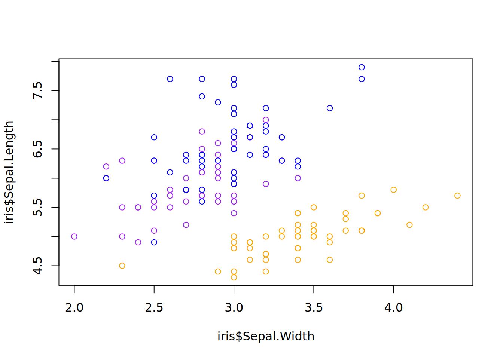
ggplot2 scatterplots
With ggplot2, making these kinds of plots is much simpler, as long as we are willing to let ggplot2 choose the colors and shapes (it tends to do a good job, but we could override it with another set of commands that we won’t worry about now).
ggplot(iris, aes(x = Sepal.Width,
y = Sepal.Length,
color = Species,
shape = Species)) +
geom_point()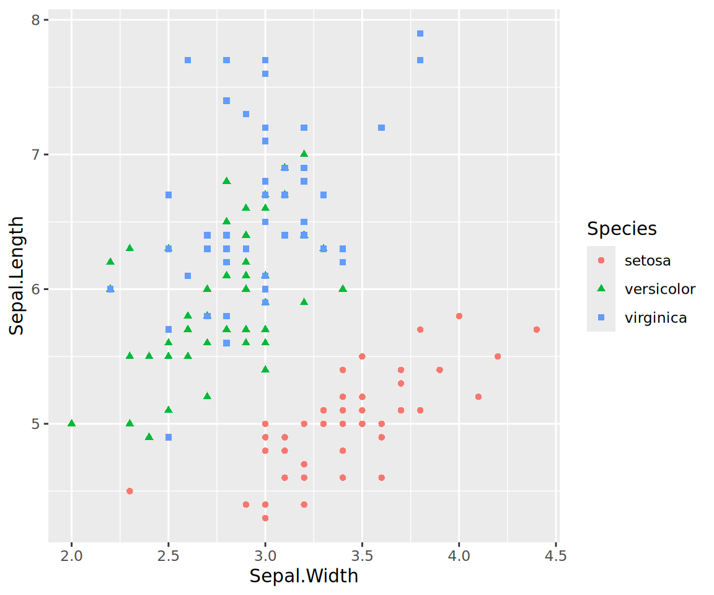
One little problem with this data that you can see is that there are multiple points that overlap, so you can’t see all of the points. This is known as overplotting, and one way to get around it is to add a bit of random error (“jitter”) to the position of each, moving all the points just a little bit from their true values (without affecting the original data at all). This is easy to do in ggplot2 without affecting the original data. (This would be much more annoying to do using basic R plotting commands.)
ggplot(iris, aes(x = Sepal.Width,
y = Sepal.Length,
color = Species,
shape = Species)) +
geom_point(position = "jitter")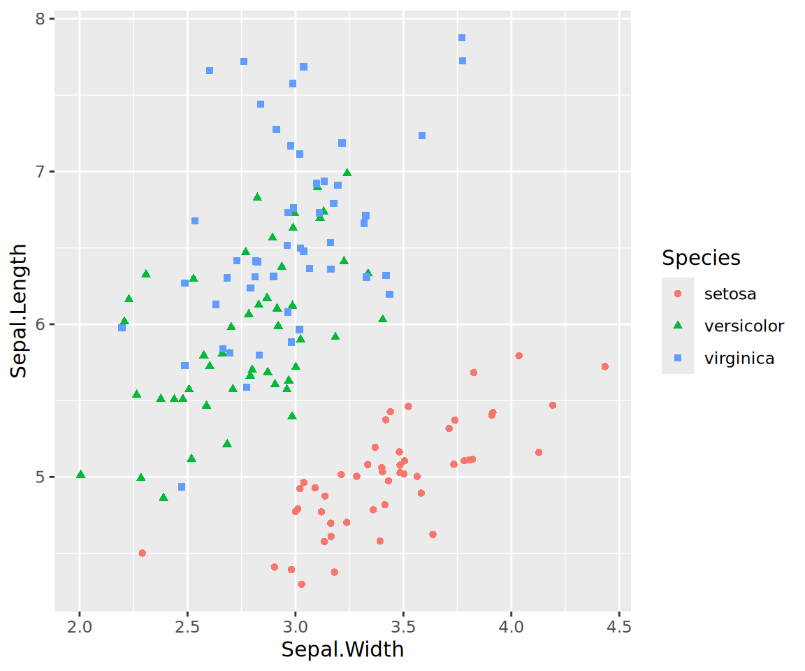
Writing Assignment
Using the iris data, or any other multidimensional data set that you might find and want to use , create a plot that illustrates something you find interesting about that data. Be creative! There are lots of sources of data out there you can use. I just found this listing of fun datasets, and this subreddit but there are plenty of others just a short search away, in addition to many available as R packages, like the Gapminder data used on DataCamp.
Your plot should take advantage of at least one feature of plotting in R that was not discussed on this page, either from base graphics, ggplot2, or another package. (Some suggestions: density plots, transparency, varible point sizes, continuous color scales, fit lines, or smoothing curves). You may find the examples available in Hadley Wickham’s R for Data Science to be helpful, or any other pages about ggplot2 you might find on the web. Just make sure you cite any inspiration.
Your lab assignment for this week is to write a tutorial explaining how to make your plot and what it means. You should start by describing the data set you are using and how to load it into R. Then describe the steps you took to make the plot. You may want start with a simple plot, then show your additions step by step as the plots (and plotting commands) become more complex. Finally, describe the conclusions about your data that you are able to discern from your plot. Assume that the reader has a basic knowledge of R, but has never seen ggplot2 before. Basically, that they are where you were before today…
Extra: Bar charts
I don’t use a lot of bar charts, for a few reasons, but it does come up at times, so I am throwing the instructions for making a bar plot down here at the bottom. To make a bar chart in R, you can use the function barplot(). In the simplest case, you have a vector of numbers and a vector of labels. For example, if I were plotting the number of points scored by each team in the NFL Conference Championships this year, I would have the following vectors:
teams <- c("49ers", "Falcons", "Patriots", "Ravens")
points <- c(28, 24, 13, 28 )
team_colors <- c("gold", "red", "blue", "purple")The first argument of barplot() is the height of the bar, and names.arg (or just names) specifies the labels for each bar. Just like before, we can set the color for each bar with col and include nice labels for the axes.
barplot(points, names = teams,
col = team_colors,
ylab = "Points Scored",
xlab = "Team")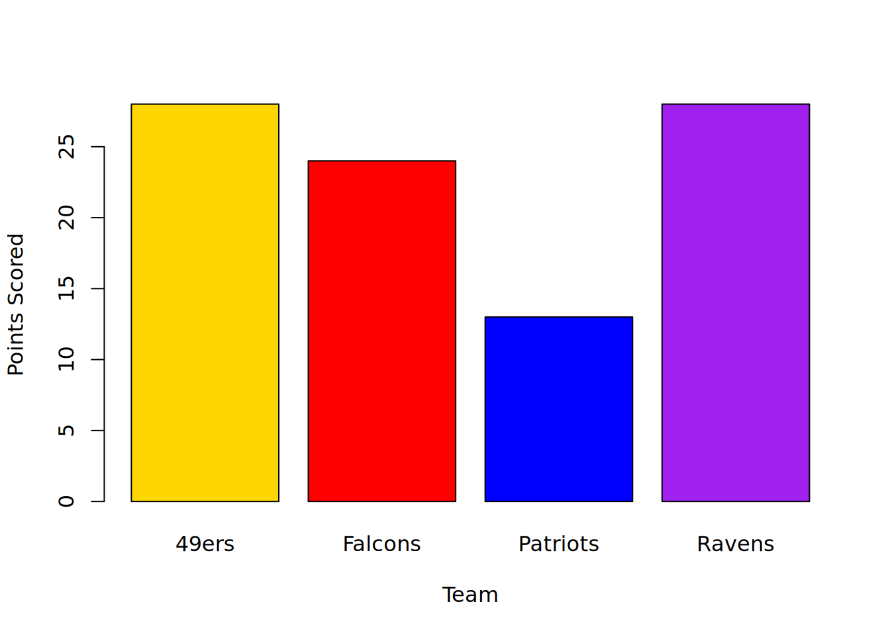
One thing you might have noticed is that the y-axis in this plot does not extend to cover all of the data. R has a tendency to do this in its attempts to find “pretty” (their word, not mine) places to put the axis ticks, but you might disagree with its decision about how long a given axis should be. Luckily, you can control this using xlim and ylim, each of which takes a vector of length 2 with the minimum and maximum values for the axis. Note: Bar charts should always start at zero. Always.
barplot(points, names = teams,
col = team_colors,
ylim = c(0, 30),
ylab = "Points Scored",
xlab = "Team")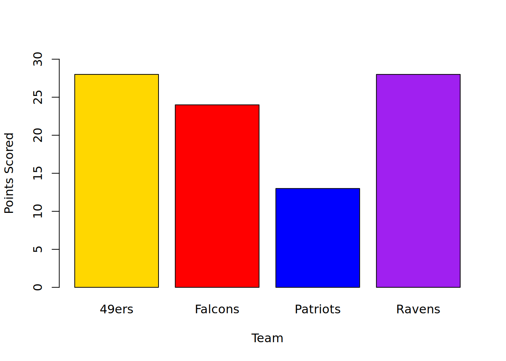
As the data get more complicated, you might want to start grouping bars (for example to put the teams that actually played each other close together, with larger spaces between matchup pairs), but we will leave that for another time.
ggplot2 bar charts
Bar charts can be done in ggplot2 by using the geom_bar() function. If your data is individual observations, this will count up the occurances of each category in the x variable. For raw data, this is pretty handy, but in cases where you already have summary data (as in the scores here), you will want to add a y variable and include the argument stat = "identity" in the call to geom_bar(). Note how I set the fill color in the geom_bar() function as well.
ggplot(mapping = aes(x = teams, y = points)) +
geom_bar(stat = "identity", fill = team_colors)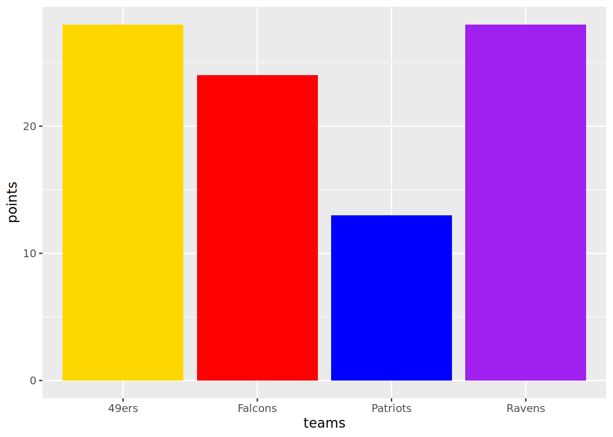
If you put the team_colors in the overall aesthetics instead of in the geom_bar() function, ggplot2 will try to intepret the vector you give to fill as a factor, and it will assign its own colors (and generate a legend), which can actually be handy:
league <- c("NFC", "NFC", "AFC", "AFC")
ggplot(mapping = aes(x = teams, y = points, fill = league)) +
geom_bar(stat = "identity")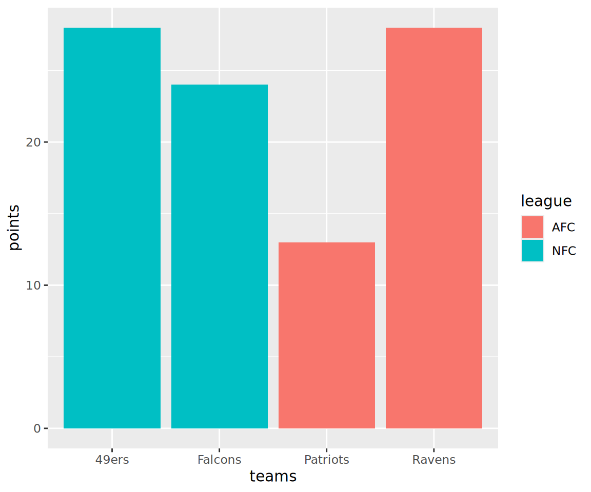